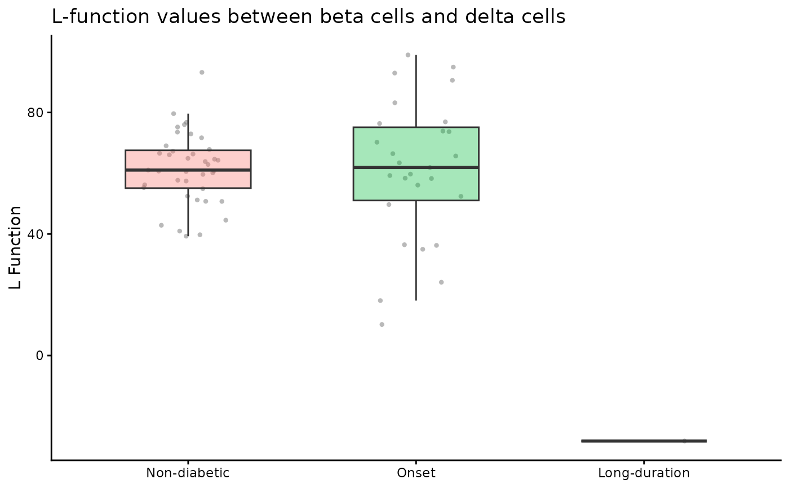
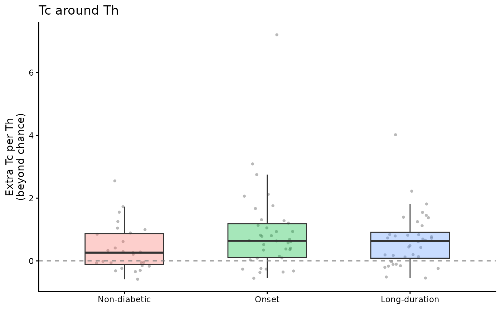

Shows the per-image value of one pair in each condition: a box plot with the images as points behind it.
For the cell method the value is the effect of spicy() in each image (by default the extra fraction of to
cells with a from cell within r; with effect = "count", the extra from cells per to cell), and each point
is sized by how much the image contributes to the test (its weight in the frailty model, relative to the
average image of its condition). With interactive = TRUE the plot is a plotly widget: hover over a point to
see its image, patient, excess and weight, which helps to find images worth looking at with plotImage().
Usage
spicyBoxPlot(
results,
from = NULL,
to = NULL,
rank = NULL,
interactive = FALSE,
parent = NULL
)Arguments
- results
The SpicyResults object returned by spicy() (either method).
- from
The
fromcell type (the neighbours looked for around eachtocell).- to
The
tocell type (the centre).- rank
Alternatively, the rank of the pair by p-value (1 is the most significant).
- interactive
Return an interactive plotly widget instead of a ggplot (needs the plotly package).
- parent
For a Kontextual result (
Statial::kontextualTest()), the parent population of the triple.
Value
A ggplot, or with interactive = TRUE a plotly htmlwidget. Images in which the pair was not
tested (no to cells, for example) are not shown.
Examples
data(spicyTest)
spicyBoxPlot(spicyTest, rank = 1)
#> Ignoring unknown labels:
#> • size : "Relative weight"

data("diabetesData")
res <- spicy(diabetesData, condition = "stage", subject = "case", r = 50,
from = "Tc", to = c("Th", "beta"))
spicyBoxPlot(res, from = "Tc", to = "Th")
#> Ignoring unknown labels:
#> • size : "Relative weight"
